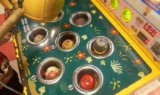

Everyday Systems: Podcast : Episode 67
Demogorgon Whack-a-mole
Whack-a-mole!
Have you ever actually played it?
The 1970s – I don’t even know what to call it – arcade game with animatronic moles that pop up that you have to whack back down into their holes with a mallet?
I’m not sure I have either. I have a visceral memory of it. But I’m not sure if that’s just from seeing depictions of it in movies and on TV.
I’ve definitely heard it as a metaphor, though. And I’m sure you have too. And it comes to mind often.
Because strange as the actual physical thing is, this bizarre game with the animatronic moles, the idea of it seems to perfectly capture a certain universal human frustration. I think that’s one reason – besides the intense nostalgia it induces – it’s had a more robust life as a metaphor than as an actual game.
You remember, I’m sure, whether vicariously or directly, its maddening appeal: the better you do at whacking these moles, the faster and more simultaneously they pop up. The better you do, the more hopeless it becomes. It’s exciting and despair inducing somehow in perfect balance.
On one level It’s like a machine invented by the devil to torture souls in hell: the myth of Sisyphus as an arcade game, that ancient greek myth about the king condemned for his hubris in trying to cheat death by having to roll a boulder up a hill every day, only to have it roll right back down again, every day, for eternity, his punishment being not pain, not hellfire, but futility, pointlessness. You may remember that famous philosophical essay by Albert Camus which took Sishyphys and his fate as emblematic of the human condition, saying, that’s not just punishment in the afterlife, that’s life itself, how we’re living right now. Absurdism is what he called this outlook.
And, I humbly submit, just as the Greek myths tell us something about our real lives, so does whack-a-mole. Often, in life, the harder we try, the more complex and difficult our problems become. We seem to squash them here, but then, immediately, they pop up again there and there and there. Some malevolent force seems to be responding to and routing around all our efforts to resist it. And, as with the game, there is a part of us that likes this dynamic, that is irresistibly drawn to it. We curse it, but we keep playing.
Before I get too existentialist on you, let me bring it down to earth, to one of our more typical concerns on this podcast: take diet – any diet. Low carb, weight watchers, even No-S.
On one level, diet is just hard. Sometimes our willpower just straight up fails and we can’t or don’t do what we’re supposed to. But more often our willpower is sufficient to meet a direct challenge, to face down our appetite directly, a frontal assault. But then our appetite gets sneaky. It finds corner cases, exceptions, excuses, and routes around our perhaps strong but gullible willpower.
As you may recall from previous episodes of this podcast, I personify, or rather, demonify, the appetitive part of myself as Demogorgon, the two baboon headed Demon Lord from the role playing game Dungeons & Dragons. Demogorgon is like Freud's evil Id with a late 70s vibe. So in my version of Whack-a-mole, instead of cute little mole heads popping up, I imagine I’ve got vile demon baboon heads, and twice as many of them. That’s how crafty and resourceful my opponent is here.There is no rule, no multitude of rules that Demogorgon – my multifarious appetites – can’t get around somehow. So it can seem at least.
Basic, vanilla No-S already takes the Demogorgon whack-a-mole phenomenon into account to some degree. Any one of the three rules – no snacks, no sweets, no seconds – even by itself, might be sufficient to moderate your eating significantly. The problem is, your appetite will look for a way to compensate by rerouting excess from another direction. Fewer snacks leads to more seconds. Fewer seconds to more sweets, etc. But by pressing down on all three at once, as No-S has you do, it’s like you’ve got three mallets slamming down all at the same time.
You’d think, three mallets should be enough for even a two headed demon. But alas, two heads means two brains, and they are subtle and crafty.
Almost always, when I violate the No S Diet or Glass ceiling or one of my other systems, it’s not because I’ve flat out caved in to some temptation and couldn’t resist it, but it’s because I’ve temporarily convinced myself that this time doesn’t really count for some reason. “Clean-up eating from my children’s plates doesn’t really count as a snack or second” or “I haven’t seen these friends in a while so it’s an S day” or “sampling the cooking wine while preparing dinner isn’t really a drink.” It’s a special case.
Part of me knows, in the moment, that I’m fooling myself with this “special casing,” but enough of me is duped to be suckered into failing. The appetitive part of me, Demogorgon, has thrown up this temporary, rationalized smokescreen of ambiguity that provides just enough cover for it to do its evil deed. The next day, when the smoke clears, or whenever I can muster sufficient detachment to review the situation impartially, it becomes overwhelmingly obvious that I did fail and was just kidding myself and then I feel not only a sense of weakness and failure (bad enough), but also of stupidity (which is even worse).
In response to this, often what I’ll be tempted to do then is try to add a rule to explicitly cover that particular situation. “Clean-up eating from your children’s plate DOES count as a snack” or “sampling the cooking wine while preparing dinner DOES count as a drink.” Sometimes I just tell myself this, informal one-off self-talk. Sometimes, at least for a while, I go further and add it to the litany of rules I am already following, and track compliance on my punch cards and/or lifelog and/or recorded mantra.
And sometimes I really do follow through and set rules like this and stick with them and they seem to help, at least in a direct sense. I squash down that particular head, that particular avenue for excess. But then, lo and behold, another excuse pops up, a different one, and another, and another. Appetite routes around. I now have a bewildering number of rules that I can barely keep track of, and my ingenious appetite keeps coming up with new ways to get around them.
It’s not just that we have limited willpower and can’t do it all (that would be hard enough), but like we have an active enemy who is rerouting around our efforts. It’s not like we flat out can’t obey the rules, usually, but that our appetite will then find some sneaky way to get around them, to satisfy itself from some angle that hadn’t even been on our radar. And brute willpower can’t adapt quickly enough.
So how do we deal with this situation? Do we simply become better players at whack-mole? Or is the best move, to channel yet another cultural phenomenon from my youth, the supercomputer WOPR in Wargames, not to play at all, because it isn’t really winnable? But how on earth can we not play it? Our opponent has made the first move. We find ourselves already in it.
“Your move, professor Falcon.”
I want to be able to give you a solution to this problem, a formula to decisively win or get out of the game entirely. I want a solution for myself!
But I can’t see one, really. It isn’t a winnable game in a decisive, final “game over” “high score” sense. And yet there’s no way to get out of playing it. At least, no good way, at least, without heavy doses of divine radiation. You’re going to be playing it, to one degree or another, as long as you have appetites.
But there is a help, I think: a way to play this game well even if it isn’t finally winnable, to not simply lose over and over again or wear yourself out in a hopeless reactive frenzy until you flop out and surrender. I’ll break it up into five steps.
Step one is a sort of mindfulness, to simply notice and be aware of this dynamic, to notice that it is happening, not just in the abstract but as it’s happening in its particular manifestations, as you’re making the excuses, as you’re beating yourself up for making the excuses, as you’re desperately fumbling for new rules. I find the image of Demogorgon Whack-A-Mole to be helpful in this regard: a ready, precise, striking label.
Step two is to try to have a sense of humor about it. To not immediately get all tragical and catastrophizing. Again, the Demogorgon whack-a-mole image is helpful here. Laugh at your silly self. If the myth of Sisyphus is absurd in a philosophical sense, Demogorgon whack-a-mole is ridiculous - in every sense. You should be rolling in the aisles or at least smiling beneficently at the antics you catch your silly self getting up to.
Step three is to humbly, experimentally, play the game – in the full knowledge that you are never going to achieve final victory. You are not a god. You have appetites. They are problematic. You have to deal with them somehow. They are not going to go away no matter how well you do.
So how do you play the game, humbly, experimentally, and well?
I mentioned already how the three basic restrictions in the No S Diet are a way of doing this, by pressing down on multiple inlets for appetite at once.
The episode I did on good redundancy last year describes several techniques that can be used to help identify and plug other personal inlets, and they’re not just limited to food appetite. They can be applied to other habits, other struggles against Demogorgon, you’re working on as well. I don’t want to repeat everything I said in that episode – but I’ll just quickly list a few:
Mantrafication is a way to ritually, repeatedly remind yourself to be on guard of particular common situations in which excess is creeping in, and it an evolving way, with recorded self-admonitions you revise and replace as you grow in self-knowledge.
A combination of personal punch cards and a life log spreadsheet can be used to track and squash specific, repeated re-routings, the specific situations in which Demogorgon keeps ambushing you.
Keeping a journal, whether on paper or into a voice recorder or voice recorder app (audiodidact) can help you notice novel behaviors and patterns and assess whether new interventions are working.
Temporary food logging or other forms of excess logging can help for limited times – I’ve found even just the threat of food logging at a certain weight threshold, since logging is unpleasant work, can be motivationally helpful.
Look at the episode notes for links to more detail on all these techniques.
In addition to these general-purpose “good redundancy” techniques, and part of what they help you to do is to find targeted, supplemental rules to cover specific Demogorgon re-routings.
There is a cost to this of course. Every additional rule adds complexity. Every additional rule adds to your ongoing willpower and attention burden. But sometimes, at least for a while, they can be helpful.
Let me give some specific examples. As I’ve mentioned before, I have more trouble with glass ceiling than with the No S Diet. And this is the area where I’ve done the most experimentation with adding rules. For the No S Diet, the built in Demogorgon countermeasures of the three esses are sufficient for me.
The situation, my situation, with glass ceiling is that simple basic system of the 2 drink a day daily limit has helped, a lot, but I’ve noticed over the years that my glasses tend to be fuller than they should be, and sometimes I will still just go straight over the limit, and a few years ago I became concerned that my two drink ceiling was becoming more like a floor than a ceiling, or at least a cruising altitude. So I’ve added a fair number of additional “whack-a-mole” rules, beyond the simple glass ceiling count, that I track in my personal punch cards and life log. And over the course of the pandemic, these rules have stabilized, and helped me significantly reduce my drinking during a time when as a society, from what I can gather on the news at least, our drinking has gone way up.
I’ve got ten of these rules total, including the original basic two-drink ceiling. I’ll list them quickly, NOT because I think they are universally applicable to anyone who is struggling with this problem, but as an example of personally effective, highly personalized anti-demogorgon countermeasures. Each has a label, so I can call it to mind quickly, and a short explanation.
1. CEILING: did I break the core two-drink ceiling rule?
2. S DAYS ONLY: did I confine my drinking to S days, weekends and holidays? This is probably the biggest new rule I’ve added. Spirits (all alcohol) are now an S, just like the No S snacks, sweets and seconds.
3. PROCESS: did I listen to my daily spirits mantra recording in which I remind myself of what all I’m doing on this front? This rule provides redundancy for the redundancy. It’s a structural reminder to remind myself.
4. NO MIX: did I mix alcohol with any other medications? I had a few bad experiences with this and need to be on the lookout. For me, this is perhaps THE most important rule.
5. BS: did I take any sips and tastes that Demogorgon is trying to whisper to me don’t really count as drinks, say while cooking?
6. SIZE: did I stick with normal sized physical glasses? No giant wine goblets or Bavarian masskrugs.
7. NO SOLO DRINKING: not one solitary sip. Another human being must be present.
8. CASCADE: did a glass ceiling failure lead to any other kind of failure? Say, a no-s failure because I raided the fridge in a disinhibited state?
9. NOTICE: did anyone seem to notice any impairment? Did anyone say anything? My wife has a great radar for this.
10. PERFORMANCE: being ruthlessly honest with myself, was there any impairment to be noticed?
Some of these 10 rules are about preparation, pre-temptation (PROCESS). Some are about the thing itself (CEILING, SIZE). Some are about context (NO MIX, SOLO). Some are about damage control, containing a mess-up so it doesn’t become a catastrophe (NOTICE, PERFORMANCE). Some are about after the mess up (CASCADE). They hit every stage in the lifecycle of the problem. Some are quantitative and sharp, some are qualitative and fuzzy. Taken together, they whack a lot of moles, from a lot of angles.
As if that weren’t enough (and it isn’t), I track every drink and its approximate size, and this gets converted to a normalized drink count in my spreadsheet with a formula. In other words, I count not only the number of drinks, the number of glasses, but the number of standard drinks that this converts to. It’s a little approximate, I just have four categories (small, medium, big and huge), but it’s close enough to reality, easy enough to guesstimate, and most importantly, makes me think twice about every prospective drink and what it’s doing to my stats.
Between all this, the 10 rules and the drinks counting, Demogorgon really has nowhere to turn. If alcoholic excess creeps, at least one of these rules will pick it up. I can’t not register it.
It took a while to discover and refine these 10 rules, but they’ve been very helpful. I did not immediately succeed in satisfying all of them 100% every day. But the pain of having to acknowledge a ding gradually brought me in line. I’m now 10/10 rules, 100% compliant, over most of the time. And on those rare instances when I am not compliant, it’s usually just one or two rules that get broken, so the damage is contained.
The con, of course, is that it’s a lot. From one rule, that solved at least half the problem, to 10 to mop up the rest. In this case, for this problem, it’s seemed worth it to me. Half a solution wasn’t sufficient. Most of these rules are highly personal, certainly in aggregate they are. Even if you are struggling with quote unquote “the same” problem, you will likely want to come up with a different set of rules. They’re just an example.
And of course, the fewer rules you can get away with, the better. Hopefully you can make do with less than 10. With No-S, I do – the three rules and one exception are enough. As I mentioned in the episode on good redundancy, you want just enough rules and redundancy to solve the problem – with a little buffer just in case.
OK, step 3, playing the game well, was a doozy, but there are still two more. Sorry friends, but we’re fighting a demon here.
Step 4 is to realize that you cannot simply starve Demogorgon to death. No amount of step 3, no matter how comprehensive and perfect, will extinguish him completely. You need to throw him a bone every now and then, give him a legitimate outlet. If Demogorgon is the Id, you can’t simply repress the Id 100%, it will force its way out, somehow. So give it a controlled out, a legitimate out.
No S does this with the S-day exception. Another way the No S Diet has Demogorgon countermeasures built right in.
My new S-day only version of the glass ceiling provides a similar pressure valve
Also, during the week I, pre-stock the fridge with non-alcoholic beer, which has gotten surprisingly OK in recent years, and Kombucha, which I’m embarrassed at how much I like, and I pour into wine glasses as a champagne-y wine substitute (a friend of mine, who is less of a fan, calls it “sauerkraut champagne”). The feeling of a drink, the ritual of a drink, with some of the sense cues of a drink, can provide some of the pleasure of a drink, some appeasement to Demogorgon. The lizard brain part of me really is fooled to a degree. It thinks it’s getting something and getting away with something.
You can use Demogorgon’s resourcefulness, his range of tastes, to your advantage here. Just as he will route around your attempts to suppress him to hit you from another, unexpected angle, he can be satiated, distracted by concessions from a completely different angle. Having trouble with food? Distract him with a non-edible pleasure, or at least a oon-caloric pleasure. Black coffee, gum, a guilty pleasure TV show, a walk outdoors. A gesture of, I was going to say, “self-care,” but to stick with the metaphor, demon care.
Step five is the step that occurred to me, in an important way, only recently. Self-help can be a lonely business. But remember you are not the only person playing this game, playing demogorgon Wack-a-mole. It’s the human condition, after all, like the myth of Sisyphus. You have company, plenty of company, potentially even partners. All the world, in some sense, is in the same boat as you, but if you can find a particular someone who is struggling with your particular issue, a friend, to talk to and check in about it, that can be transformative.
And because you are helping them at the same time as they help you, you can begin to get beyond your narrow self obsessiveness, to move into a generous concern for someone else. This movement away from yourself and toward someone else might be even more important than the problem you think you are trying to solve. It may in some deep way be connected to that problem. I sometimes think a kind of loneliness, a feeling of uselessness may be at the root of a lot of our self-destructive behaviors. With step 5, you’re no longer alone, and you’re no longer useless, you’re helping someone else.
In a sense, step 5, finding a Demogorgon whack-a-mole partner, is a lot like step 5 in AA’s famous 12 steps, the confession step. I like the AA step 5 rule so much that I’ll quote it verbatim here:
“[We must] admit to God, to ourselves, and to another human being the exact nature of our wrong”
“To another human being” is the part I really needed to hear. I wish I were more embarrassed at my bad behavior before God, or myself, my own sense of integrity. Sadly, I think both my faith and my self esteem are a little too weak for either of those to be sufficient deterrents in themselves. Or maybe, as far as God goes, it’s because I think he will forgive me anyway. That’s his job, right? But I am powerfully motivated by knowing that I will have to fess up to another human being. I want to feel that person's approval when I’m good, and I dread their disappointment when I’m tempted to do bad. And of course, it’s not an either-or, AA step 5 says do all three – higher power, yourself, and another human being – and I’m not going to try to improve upon that.
Well, that’s all I’ve got. It’s a lot but still, just 5 steps to AAs 12. Everyday problems aren’t quite as severe as those being faced by full-on addicts, systematic moderation is at least a little easier than systematic abstinence.
I’ll end with a quote from Albert Camus’s book the Myth of Sisyphus, that I think applies just as well to us players of Demogorgon Whack-a-mole: “The struggle itself ... is enough to fill a man's heart. One must imagine Sisyphus happy". It’s a game after all. May you find a way to enjoy it.
© 2002-2022 Everyday Systems LLC, All Rights Reserved.